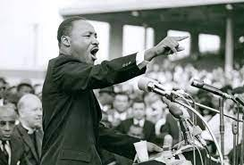

I was born in Torrance, California in 19** on the day of
**-**. Even though I was born in Torrance I've never lived in Torrance
a day outside of the hospital. Raised by a single mother who worked
hard; at an early age, I learned the value of focus and hard work.
Even though my mother dropped out of high school to support her
siblings she still managed to lead her only child through
undergraduate studies. If were not for her sacrifices, I would be a
negative statistic. I found an interest in computer science in middle
school. As I was a part of the robotics club. I had always done an
excellent job in mathematics and science except for my mediocre
performance in biology. It was not until undergrad that I knew I would
one day learn to code. Fast-forward, here I am as a Philosopher,
learning how to code my first languages.
King/ Drew Magnet Highschool class of '16
Issa Rae
Morehouse College class of Spring '21
Philosophy Bachelor of Arts
Martin Luther King Jr., Samuel L. Jackson, Spike Lee, Justin "Henny" Henderson, Kennard Garrett, and John D. Washington - to name a few
I enjoy:
I am interested in:
Image of Issa Rae
Image of Martin Luther King Jr.